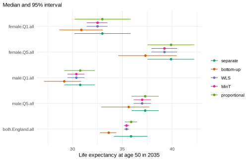
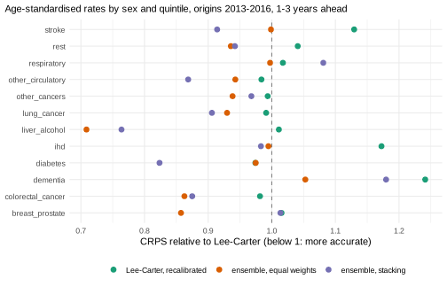

Causes of death by deprivation: coherent and combined forecasts
Source:vignettes/causes-deprivation.Rmd
causes-deprivation.RmdThis vignette is precomputed
(dev/precompute-vignettes.R) because its backtests refit
many models at every origin.
Forecasts of causes of death by deprivation have to add up in three directions: the quintiles to England, women and men to both sexes, and the causes to all causes. They also have to suit causes whose trends differ: a model that forecasts one cause well can forecast another badly. This vignette forecasts twelve groups of causes by sex, age and deprivation quintile. Part 1 measures how much more pessimistic the sum of the cause forecasts is than a forecast of all causes, makes the forecasts coherent in all three directions and compares the ways to do so, among them two compositional models of the causes. Part 2 combines six models for each cause, one of them with a tuned fitting window, recalibrates the combination, and checks in a backtest whether it forecasts better than Lee-Carter.
Data
Deaths and mid-year populations by sex, 5-year age group, decile of
the Index of Multiple Deprivation and cause of death, England 2001-2019
(ons_data; Source: Office for National Statistics, Open
Government Licence v3.0). The deciles are combined into quintiles (Q1
most deprived, Q5 least deprived), and the 29 causes of the table into
the eleven groups of ons_cause_groups and a residual group
(rest: all causes minus the eleven groups, so it also holds
the deaths of causes the table does not list). The twelve groups add up
to all causes:
causes <- names(ons_data)[-(1:7)]
x <- mt_data(deaths = ons_data, population = ons_data, by = c("sex", "imd_decile", "cause"), age = "age_group",
value = list(deaths = c(all = "all_causes", causes), population = "population"))
x <- mt_as_exposure(x, type = "midyear")
x <- mt_group_levels(x, "imd_decile", function(d) paste0("Q", ceiling(as.numeric(d) / 2)), name = "quintile")
x <- mt_group_levels(x, "cause", ons_cause_groups, other = "rest", total = "all", additive = "rates")Ages. Cause-specific counts per sex and quintile are small at younger ages. The share of cells (sex, quintile, year) with fewer than five deaths, by cause and age group:
cells <- as.data.table(x)[measure == "deaths" & cause != "all" & age_lo >= 40 & age_lo < 65]
dcast(cells, cause ~ paste0(age_lo, "-", age_hi - 1), value.var = "value",
fun.aggregate = function(d) round(mean(d < 5), 2))
#> cause 40-44 45-49 50-54 55-59 60-64
#> 1: breast_prostate 0.50 0.41 0.01 0.00 0.00
#> 2: colorectal_cancer 0.02 0.00 0.00 0.00 0.00
#> 3: dementia 1.00 0.99 0.98 0.39 0.01
#> 4: diabetes 0.47 0.29 0.22 0.06 0.04
#> 5: ihd 0.04 0.00 0.00 0.00 0.00
#> 6: liver_alcohol 0.00 0.00 0.00 0.00 0.00
#> 7: lung_cancer 0.04 0.00 0.00 0.00 0.00
#> 8: other_cancers 0.00 0.00 0.00 0.00 0.00
#> 9: other_circulatory 0.52 0.28 0.13 0.02 0.00
#> 10: respiratory 0.45 0.20 0.01 0.00 0.00
#> 11: rest 0.00 0.00 0.00 0.00 0.00
#> 12: stroke 0.03 0.01 0.00 0.00 0.00Below 50, many cells of several groups hold fewer than five deaths: at 45-49 almost all cells of dementia, and between a fifth and two fifths of those of breast and prostate cancer, diabetes, other circulatory diseases and respiratory diseases. From 50 on, more than a fifth of the cells have fewer than five deaths only for dementia at 50-59 and diabetes at 50-54. The analysis uses ages 50 and over, as “Inequality in England” does. Dementia at 50-54 is kept, so that the causes add up to all causes at every age.
The hierarchy
Three variables add up: sex to both sexes, quintile to England, and
cause to all causes. Sexes and quintiles divide the population, so their
deaths and exposures add up. Causes share the population of their
stratum, so their rates add up to the all-cause rate
(additive = "rates"). One crossed hierarchy describes all
three, and mt_aggregate_strata() adds every total to the
data:
h <- mt_hierarchy(sex = "both", quintile = "England", cause = list(total = "all", additive = "rates"))
xa <- mt_aggregate_strata(x, h)
mt_validate(xa, hierarchy = h)
#> <mt_validation> 1 finding(s): 0 error, 0 warning, 1 info
#> [info] hierarchy (deaths,exposure, 114 aggregate strata, n = 0): sums of parts agree with the totals within tolerance
mt_strata(xa, h)[, .N, by = level]
#> level N
#> 1: bottom 120
#> 2: aggregate 113
#> 3: total 1The data now hold 120 bottom series (2 sexes, 5 quintiles, 12
causes), 113 aggregates and the total (both sexes, England, all causes).
The all-cause series of each sex and quintile are observed
(all_causes), and mt_validate() confirms that
the causes add up to them; all other aggregates are sums.
Part 1: forecasts that add up in three directions
Separate forecasts
One Lee-Carter model (Lee and Carter 1992) for each of the 234 strata, forecast to 2035:
fc_base <- mt_forecast(mt_fit(lee_carter(), xa), to = 2035, n_draws = 500, seed = 1)
#> Warning in check_draws_plausible(arr, fit$age, fit$strata, spec$label):
#> Lee-Carter: forecast death rates above 1 in 4.0% of the draws (strata
#> female.Q1.dementia, female.Q3.dementia, male.Q1.dementia; ages 90+). The model
#> is unstable here, often because of sparse counts or a steep trend extrapolated
#> far ahead; consider wider age groups (mt_regroup()), pooling (li_lee(common_by
#> = )), smoothing (step_smooth()) or an ensemble.The warning concerns dementia at ages 90 and over, whose recorded rates rose steeply in 2001-2019: Lee-Carter extrapolates the rise, and some paths reach rates above one.
mt_coherence() gives, for every aggregate, the ratio of
the sum of its bottom strata to the aggregate’s own forecast, path by
path, on the deaths scale with the exposures of 2019. The table groups
the aggregates by the variables they sum over:
coherence_table <- function(forecasts) {
co <- rbindlist(lapply(forecasts, mt_coherence, hierarchy = h), idcol = "method")
co[, summed := paste(c("sex", "quintile", "cause")[c(sex == "both", quintile == "England", cause == "all")],
collapse = " + "), by = .(sex, quintile, cause)]
tab <- co[, .(ratio = sprintf("%.3f (%.3f-%.3f)", median(q0.5), min(q0.025), max(q0.975))), by = .(summed, method)]
dcast(tab, summed ~ factor(method, names(forecasts)), value.var = "ratio")
}
coherence_table(list(separate = fc_base))
#> summed separate
#> 1: cause 1.066 (0.761-2.713)
#> 2: quintile 1.009 (0.347-3.568)
#> 3: quintile + cause 1.087 (0.867-2.127)
#> 4: sex 0.999 (0.293-4.325)
#> 5: sex + cause 1.073 (0.835-2.363)
#> 6: sex + quintile 1.006 (0.492-3.096)
#> 7: sex + quintile + cause 1.087 (0.893-1.884)Each cell gives the median ratio of a group of aggregates (over ages, paths, years and aggregates) and, in brackets, the lowest 2.5% and the highest 97.5% quantile of the ratios of its single aggregates and years.
The forecasts of the twelve causes add up to more than the all-cause
forecasts: by 7% in the median for the ten series of sex by quintile
(cause), and by 7% to 9% for the totals over sexes or
quintiles. Over long horizons, sums of cause-specific forecasts tend to
be more pessimistic than forecasts of all causes, because the sum is
dominated by the causes that fall slowest or rise (Wilmoth 1995); the
next section measures this pessimism. Over sexes and quintiles the
medians agree within 1%, but single paths do not: the 234 models draw
their futures independently, so a path of England has no matching paths
of its quintiles.
How pessimistic are the forecasts by cause?
Wilmoth (1995) compares a forecast of all-cause mortality with the
sum of separate forecasts of the causes. mt_pessimism()
computes his measures path by path: life expectancy from both forecasts
and their difference, all causes minus the summed causes (positive where
the forecast by cause is more pessimistic); the m-ratio, the sum of the
cause rates over the all-cause rate at each age (his equation 6); and
the contribution of each cause to the m-ratio minus 1 (equation 13). For
the separate Lee-Carter forecasts, life expectancy at 50 in 2035 from
the all-cause forecast (total) and from the summed causes
(causes), their difference with its 95% interval over the
paths, and the share of paths in which the summed causes give the lower
life expectancy (positive):
pess <- mt_pessimism(fc_base, at = 50, paths = TRUE)
e50 <- dcast(pess[period == 2035 & sex != "both"], sex + quintile + draw ~ measure, value.var = "value")
e50[, .(total = round(mean(total), 1), causes = round(mean(causes), 1),
difference = sprintf("%.1f (%.1f to %.1f)", mean(difference), quantile(difference, 0.025),
quantile(difference, 0.975)),
positive = round(mean(difference > 0), 2)), by = .(sex, quintile)]
#> sex quintile total causes difference positive
#> 1: female England 37.1 34.9 2.2 (-0.7 to 5.1) 0.93
#> 2: female Q1 33.0 30.8 2.1 (-1.5 to 5.7) 0.88
#> 3: female Q2 35.8 33.6 2.2 (-1.2 to 5.2) 0.92
#> 4: female Q3 37.3 35.0 2.3 (-1.1 to 5.3) 0.91
#> 5: female Q4 38.3 36.0 2.2 (-0.5 to 5.2) 0.94
#> 6: female Q5 39.8 37.4 2.4 (-1.4 to 6.0) 0.89
#> 7: male England 34.8 33.0 1.8 (-0.5 to 4.5) 0.93
#> 8: male Q1 30.8 29.1 1.6 (-0.7 to 4.0) 0.92
#> 9: male Q2 33.4 31.7 1.7 (-0.8 to 4.2) 0.91
#> 10: male Q3 35.3 33.6 1.7 (-0.9 to 4.5) 0.91
#> 11: male Q4 36.2 34.2 1.9 (-0.5 to 4.7) 0.94
#> 12: male Q5 37.3 35.6 1.8 (-0.9 to 4.8) 0.90The difference for both sexes in England (the all-cause forecast of England against the sum of the cause forecasts of England) by forecast year:
pess[sex == "both" & quintile == "England" & measure == "difference" & period %in% seq(2020, 2035, 5),
.(difference = round(mean(value), 2), q0.025 = round(quantile(value, 0.025), 2),
q0.975 = round(quantile(value, 0.975), 2)), by = period]
#> period difference q0.025 q0.975
#> 1: 2020 0.03 -0.40 0.46
#> 2: 2025 0.48 -0.83 1.78
#> 3: 2030 1.07 -0.83 3.16
#> 4: 2035 1.84 -0.88 4.49In every sex and quintile, the summed causes give a lower life expectancy at 50 in 2035 than the all-cause forecast: by 2.1 to 2.4 years on average for women and 1.6 to 1.9 years for men, in 88% to 94% of the paths. The 95% intervals of the difference are wide and include zero: the forecasts of the causes and of all causes are drawn independently, so the uncertainty of both enters the difference. The difference grows with the horizon, for both sexes in England from 0.03 years in 2020 to 1.84 years in 2035.
The contributions of the causes, by age, for both sexes in England in 2035 (means over the paths); the last row is their sum, the m-ratio minus 1:
contrib <- mt_pessimism(fc_base, by = "cause")
eng <- contrib[period == 2035 & sex == "both" & quintile == "England", .(cause, age, mean)]
eng <- rbind(eng, eng[, .(cause = "m-ratio - 1", mean = sum(mean)), by = age])
eng[, `:=`(cause = factor(cause, unique(cause)), mean = round(mean, 2))]
dcast(eng, cause ~ age, value.var = "mean")
#> cause 50-54 55-59 60-64 65-69 70-74 75-79 80-84 85-89 90+
#> 1: lung_cancer -0.01 -0.01 0.00 0.02 0.02 0.01 0.01 0.01 0.01
#> 2: colorectal_cancer 0.00 0.00 0.00 0.00 0.00 0.01 0.01 0.00 0.00
#> 3: breast_prostate 0.00 -0.01 0.00 0.00 0.00 0.01 0.01 0.01 0.01
#> 4: other_cancers -0.01 0.00 0.02 0.05 0.06 0.07 0.05 0.03 0.01
#> 5: ihd -0.04 -0.04 -0.06 -0.06 -0.06 -0.05 -0.05 -0.04 -0.03
#> 6: stroke -0.01 -0.01 -0.01 -0.02 -0.02 -0.02 -0.03 -0.03 -0.02
#> 7: other_circulatory 0.00 0.00 0.00 0.00 0.01 0.01 0.01 0.00 -0.01
#> 8: dementia 0.00 0.00 0.01 0.03 0.09 0.20 0.35 0.53 0.60
#> 9: respiratory 0.00 0.00 0.02 0.02 0.03 0.03 0.03 0.03 0.02
#> 10: diabetes 0.00 0.00 0.00 0.00 0.00 0.00 0.00 0.00 0.00
#> 11: liver_alcohol 0.04 0.06 0.06 0.05 0.03 0.01 0.00 0.00 0.00
#> 12: rest 0.07 0.03 0.03 0.02 0.02 0.02 -0.01 -0.03 -0.06
#> 13: m-ratio - 1 0.04 0.03 0.07 0.12 0.19 0.29 0.38 0.51 0.52The cause with the largest contribution at each age from 75 on, counted over the 18 series of sex by quintile (with their totals) and the four age groups:
contrib[period == 2035 & age_lo >= 75, .(largest = cause[which.max(mean)]), by = .(sex, quintile, age)][
, .N, by = largest]
#> largest N
#> 1: dementia 72The m-ratio rises with age, from between 1.03 and 1.07 at ages 50-64 to 1.51 at 85-89 and 1.52 at 90 and over. At ages 50-64, liver disease and the residual group contribute most (up to 0.06 and 0.07), and ischaemic heart disease, which fell faster than all causes, contributes negatively (-0.04 to -0.06). From 70 on, dementia contributes most: 0.53 at 85-89, more than the m-ratio minus 1 (0.51), because ischaemic heart disease, stroke and the residual group contribute negatively there. Dementia has the largest contribution at every age from 75 on in all 18 series. For Japan in 1951-1990, Wilmoth (1995) attributed the pessimism mainly to the trends of cancer and heart disease, with the qualification that these trends may be biased by changes in diagnostic practice. The same qualification applies here: the recorded dementia rates rose steeply in 2001-2019, part of the rise may come from changes in diagnosis and in the recording of causes of death, and a forecast by cause extrapolates it.
Wilmoth also shows that the pessimism can be approximated from the
distributions of deaths by cause in two periods alone: all causes and
each cause are projected at their rate of change between the two periods
(his equations 12 and 14). mt_pessimism() on the data
computes this approximation, by default from the two halves of the
observed years (2001-2009 and 2011-2019; with an odd number of years the
middle one is left out), Wilmoth’s “first-to-second” method;
periods gives other periods, here the first and the last
three years (“first-to-last”). With n_draws, the deaths are
Poisson draws, and the intervals show their sampling variation. The
difference of life expectancy at 50 in 2035, mean and 95% interval:
approx <- rbindlist(list(
"Lee-Carter" = pess,
"first-to-second" = mt_pessimism(xa, to = 2035, at = 50, n_draws = 200, seed = 1, paths = TRUE),
"first-to-last" = mt_pessimism(xa, periods = list(2001:2003, 2017:2019), to = 2035, at = 50, n_draws = 200,
seed = 1, paths = TRUE)),
idcol = "method", use.names = TRUE)
#> Warning in pess_from_data(x, var, total_level, periods, h, to, n_draws, : 1
#> cells of age, cause and draw have no deaths in the first period and some in the
#> second: their first-period deaths are set to 0.5.
#> Warning in pess_from_data(x, var, total_level, periods, h, to, n_draws, : 38
#> cells of age, cause and draw have no deaths in the first period and some in the
#> second: their first-period deaths are set to 0.5.
tab <- approx[period == 2035 & measure == "difference" & sex != "both",
.(difference = sprintf("%.1f (%.1f to %.1f)", mean(value), quantile(value, 0.025),
quantile(value, 0.975))), by = .(sex, quintile, method)]
tab[, method := factor(method, unique(method))]
dcast(tab, sex + quintile ~ method, value.var = "difference")
#> sex quintile Lee-Carter first-to-second first-to-last
#> 1: female England 2.2 (-0.7 to 5.1) 3.7 (3.7 to 3.8) 2.5 (2.4 to 2.5)
#> 2: female Q1 2.1 (-1.5 to 5.7) 3.6 (3.5 to 3.7) 2.3 (2.3 to 2.4)
#> 3: female Q2 2.2 (-1.2 to 5.2) 3.6 (3.5 to 3.7) 2.4 (2.3 to 2.5)
#> 4: female Q3 2.3 (-1.1 to 5.3) 3.7 (3.6 to 3.8) 2.5 (2.4 to 2.6)
#> 5: female Q4 2.2 (-0.5 to 5.2) 3.8 (3.7 to 3.9) 2.5 (2.4 to 2.6)
#> 6: female Q5 2.4 (-1.4 to 6.0) 4.1 (4.0 to 4.2) 2.7 (2.6 to 2.8)
#> 7: male England 1.8 (-0.5 to 4.5) 3.2 (3.2 to 3.3) 2.0 (2.0 to 2.1)
#> 8: male Q1 1.6 (-0.7 to 4.0) 3.1 (3.0 to 3.2) 1.9 (1.8 to 2.0)
#> 9: male Q2 1.7 (-0.8 to 4.2) 3.1 (3.0 to 3.3) 2.0 (1.9 to 2.1)
#> 10: male Q3 1.7 (-0.9 to 4.5) 3.2 (3.1 to 3.3) 2.0 (2.0 to 2.1)
#> 11: male Q4 1.9 (-0.5 to 4.7) 3.3 (3.2 to 3.4) 2.1 (2.0 to 2.2)
#> 12: male Q5 1.8 (-0.9 to 4.8) 3.3 (3.2 to 3.5) 2.0 (1.9 to 2.1)The m-ratio and the contribution of dementia by age in the first-to-second approximation, both sexes in England, 2035:
approx_cause <- mt_pessimism(xa, by = "cause", to = 2035)
approx_cause[period == 2035 & sex == "both" & quintile == "England",
.(m_ratio = round(1 + sum(mean), 2), dementia = round(mean[cause == "dementia"], 2)), by = age]
#> age m_ratio dementia
#> 1: 50-54 1.06 0.00
#> 2: 55-59 1.06 0.00
#> 3: 60-64 1.08 0.01
#> 4: 65-69 1.15 0.06
#> 5: 70-74 1.26 0.17
#> 6: 75-79 1.46 0.42
#> 7: 80-84 1.79 0.82
#> 8: 85-89 2.10 1.18
#> 9: 90+ 2.31 1.44The approximations agree with the Lee-Carter forecasts in sign and in the larger differences for women, and their size depends on the periods: from the halves, the summed causes give a life expectancy at 50 in 2035 lower by 3.1 to 4.1 years, from the first and the last three years by 1.9 to 2.7 years, against 1.6 to 2.4 years from the Lee-Carter forecasts. The Poisson intervals are narrow (0.2 years or less on either side): the sampling variation of the deaths matters little next to the choice of the periods and of the model. The warnings come from dementia at 50-54, the cause and age with the fewest deaths (see “Ages”): in some Poisson draws it has no deaths in the first period, more often in the three-year periods, and these deaths are set to 0.5. The approximation from the halves projects each cause from 2015, the midpoint of the second period, twenty years ahead; dementia contributes 1.18 to its m-ratio at 85-89 (2.10) and 1.44 at 90 and over (2.31), more than twice its contributions in the Lee-Carter forecasts. In both, the pessimism of the forecasts by cause comes mainly from dementia at old ages.
Four ways to make them add up
-
Bottom-up (
"bottom_up"): only the 120 bottom series (sex by quintile by cause) are used, and every total is their sum. -
WLS (
"wls"): all 234 forecasts are adjusted, each in proportion to the variance of its own draws (Hyndman, Lee and Wang 2016). -
MinT (
"mint"): as WLS, with the covariances between the strata (Wickramasuriya, Athanasopoulos and Hyndman 2019). -
Proportional (
"proportional"withfixed): the all-cause forecasts of the ten series of sex by quintile are kept, and the causes of each are scaled, path by path, so that they add up to it (Athanasopoulos, Ahmed and Hyndman 2009). The totals over sexes and quintiles are sums.
all_cause <- mt_strata(xa)[cause == "all" & sex != "both" & quintile != "England", label]
fc <- list("separate" = fc_base,
"bottom-up" = mt_reconcile(fc_base, h, method = "bottom_up"),
"WLS" = mt_reconcile(fc_base, h, method = "wls"),
"MinT" = mt_reconcile(fc_base, h, method = "mint"),
"proportional" = mt_reconcile(fc_base, h, method = "proportional", fixed = all_cause))
#> Warning in reconcile_array(arr, hs, h$additive, method, shrink, exposure %||% :
#> In 97% of the draws some bottom forecasts were set to zero to keep the
#> aggregates; their distributions are truncated. Check the base forecasts
#> (mt_coherence()) or use method = "proportional" with fixed nodes.
#> Warning in reconcile_array(arr, hs, h$additive, method, shrink, exposure %||% :
#> In 97% of the draws some bottom forecasts were set to zero to keep the
#> aggregates; their distributions are truncated. Check the base forecasts
#> (mt_coherence()) or use method = "proportional" with fixed nodes.
coherence_table(fc[-1])
#> summed bottom-up WLS
#> 1: cause 1.000 (1.000-1.000) 1.000 (1.000-1.000)
#> 2: quintile 1.000 (1.000-1.000) 1.000 (1.000-1.000)
#> 3: quintile + cause 1.000 (1.000-1.000) 1.000 (1.000-1.000)
#> 4: sex 1.000 (1.000-1.000) 1.000 (1.000-1.000)
#> 5: sex + cause 1.000 (1.000-1.000) 1.000 (1.000-1.000)
#> 6: sex + quintile 1.000 (1.000-1.000) 1.000 (1.000-1.000)
#> 7: sex + quintile + cause 1.000 (1.000-1.000) 1.000 (1.000-1.000)
#> MinT proportional
#> 1: 1.000 (1.000-1.000) 1.000 (1.000-1.000)
#> 2: 1.000 (1.000-1.000) 1.000 (1.000-1.000)
#> 3: 1.000 (1.000-1.000) 1.000 (1.000-1.000)
#> 4: 1.000 (1.000-1.000) 1.000 (1.000-1.000)
#> 5: 1.000 (1.000-1.000) 1.000 (1.000-1.000)
#> 6: 1.000 (1.000-1.000) 1.000 (1.000-1.000)
#> 7: 1.000 (1.000-1.000) 1.000 (1.000-1.000)After reconciliation every ratio is 1.000 in every path, for every kind of aggregate: the forecasts add up over sexes, quintiles and causes at the same time. WLS and MinT warn that in 97% of the paths the projection made some bottom forecasts negative; the non-negative reconciliation of Wickramasuriya, Turlach and Hyndman (2020) then holds them at zero. The values held at zero by WLS (age, year, stratum and path), by cause, and the first year in which they occur:
zero <- which(fc$WLS$rates < 1e-9, arr.ind = TRUE)
zeros <- data.table(cause = fc$WLS$strata$cause[zero[, 3]], year = fc$WLS$periods[zero[, 2]])
zeros[, .(values = .N, from = min(year)), by = cause][order(-values)]
#> cause values from
#> 1: diabetes 3846 2024
#> 2: dementia 2049 2026
#> 3: liver_alcohol 1353 2024
#> 4: other_circulatory 487 2025
#> 5: colorectal_cancer 46 2031
#> 6: respiratory 16 2031
#> 7: lung_cancer 13 2032
#> 8: breast_prostate 12 2032They are mostly diabetes, dementia and liver disease, from the mid-2020s on: WLS moves each forecast in proportion to the variance of its own draws, so the causes with the most uncertain trends absorb most of the adjustment, and some of their paths reach zero.
Life expectancy at 50 from all causes in 2035:
mt_plot_compare(fc, periods = 2035, at = 50,
strata = c("female.Q1.all", "female.Q5.all", "male.Q1.all", "male.Q5.all", "both.England.all"))
mt_compare_forecasts(fc, periods = 2035, at = 50, strata = c("female.Q1.all", "female.Q5.all", "both.England.all"))
#> label period separate bottom-up WLS
#> 1: both.England.all 2035 35.9 (34.2-37.5) 33.6 (32.7-34.4) 35.4 (35.2-35.7)
#> 2: female.Q1.all 2035 33.0 (30.2-35.8) 30.9 (28.7-33.0) 32.5 (31.4-33.5)
#> 3: female.Q5.all 2035 39.9 (37.5-42.2) 37.3 (34.6-40.5) 39.2 (37.9-40.5)
#> MinT proportional
#> 1: 35.4 (35.2-35.7) 35.9 (35.2-36.5)
#> 2: 32.5 (31.4-33.5) 33.0 (30.2-35.8)
#> 3: 39.2 (37.9-40.5) 39.9 (37.5-42.2)The age-standardised death rates (per 100,000, ages 50 and over) of some causes for both sexes in England:
mt_compare_forecasts(fc, quantity = "asr", periods = 2035,
strata = paste0("both.England.", c("lung_cancer", "ihd", "dementia", "respiratory")), digits = 0)
#> label period separate bottom-up WLS
#> 1: both.England.dementia 2035 727 (266-2148) 899 (624-1385) 352 (283-419)
#> 2: both.England.ihd 2035 104 (81-133) 105 (96-115) 105 (98-112)
#> 3: both.England.lung_cancer 2035 113 (107-121) 124 (114-140) 119 (118-122)
#> 4: both.England.respiratory 2035 141 (140-148) 143 (122-170) 142 (135-153)
#> MinT proportional
#> 1: 352 (283-418) 558 (453-692)
#> 2: 105 (98-112) 83 (70-94)
#> 3: 119 (118-122) 99 (85-117)
#> 4: 142 (135-153) 110 (88-139)The methods differ most for all-cause life expectancy and for the causes with uncertain trends. Bottom-up gives the lowest life expectancy at 50: 33.6 years for England in 2035, against 35.9 years from the all-cause forecast, because the sum of the causes is more pessimistic. WLS and MinT stay close to the all-cause forecasts (35.4 years), with much narrower intervals (35.2-35.7): they move the most uncertain forecasts most, and these are forecasts of single causes. Dementia, whose separate forecast is the most uncertain (age-standardised rate 727 per 100,000, interval 266-2148), is pulled down to 352. Proportional scaling keeps the all-cause forecasts of each sex and quintile; England, their sum, has the median of its own forecast (35.9 years) and a narrower interval (35.2-36.5). It scales all causes of a path by the same factor, so every cause comes down: ischaemic heart disease from 104 to 83 per 100,000, lung cancer from 113 to 99, respiratory diseases from 141 to 110.
Causes as a composition
Reconciliation adjusts forecasts that were made separately. A model
of all causes together gives coherent forecasts directly.
coda_causes() (Oeppen 2008) treats the deaths of a
multiple-decrement life table by age and cause in each year as one
composition, transforms it by centred log-ratios and describes its
change over time by the first components of a singular value
decomposition; the causes add up to all causes in every path. By default
it has one component, shared by all causes (“CoDA” below). Kjærgaard et
al. (2019) call this model CT-CoDA (they use three components) and
extend it to 2S-CoDA in two ways:
- the ages and causes are weighted by their mean life-table deaths,
and the years t by
0.1 * 0.9^(T - t), where T is the last training year (weights = "deaths", rho = 0.1), so that the large causes and the recent years determine the joint component; - each cause gets one individual component for the variation that the
joint component leaves (
individual = TRUE).
coda_causes() fits each group of strata that differ only
in the cause. reconciled(method = "bottom_up") keeps the
forecasts of the ten series by sex and quintile and sums them to the
totals over sexes and quintiles, so that the forecasts add up in all
three directions:
coda <- list("CoDA" = coda_causes(), "2S-CoDA" = coda_causes(weights = "deaths", rho = 0.1, individual = TRUE))
fit_coda <- lapply(coda, function(spec) mt_fit(reconciled(spec, h, method = "bottom_up"), xa))mt_parameters() of 2S-CoDA gives the share of the
variation of each cause (the squared Frobenius norm of its centred
log-ratio deaths) that the joint and the individual component explain,
as in Fig. 4 of Kjærgaard et al. (2019); median and range over the ten
series by sex and quintile:
par_2s <- mt_parameters(fit_coda[["2S-CoDA"]])
ex <- par_2s[parameter %in% c("explained_joint", "explained_individual") & !grepl("both|England", stratum)]
ex[, part := sub("explained_", "", parameter)]
ex <- ex[, .(share = sprintf("%.2f (%.2f-%.2f)", median(value), min(value), max(value))), by = .(cause = index, part)]
ex[, cause := factor(cause, unique(cause))]
dcast(ex, cause ~ part, value.var = "share")[, .(cause, joint, individual)]
#> cause joint individual
#> 1: lung_cancer 0.67 (0.63-0.74) 0.18 (0.12-0.22)
#> 2: colorectal_cancer 0.53 (0.17-0.67) 0.16 (0.12-0.31)
#> 3: breast_prostate 0.50 (0.41-0.67) 0.19 (0.10-0.36)
#> 4: other_cancers 0.76 (0.48-0.86) 0.12 (0.07-0.24)
#> 5: ihd 0.90 (0.83-0.92) 0.06 (0.04-0.09)
#> 6: stroke 0.82 (0.77-0.87) 0.07 (0.05-0.09)
#> 7: other_circulatory 0.19 (0.10-0.31) 0.35 (0.25-0.56)
#> 8: dementia 0.62 (0.62-0.74) 0.22 (0.17-0.27)
#> 9: respiratory 0.48 (0.35-0.71) 0.26 (0.14-0.36)
#> 10: diabetes 0.33 (0.16-0.45) 0.30 (0.24-0.40)
#> 11: liver_alcohol 0.43 (0.39-0.55) 0.23 (0.18-0.41)
#> 12: rest 0.47 (0.36-0.56) 0.26 (0.17-0.34)The share of the variation of all causes explained by the joint component, range over the ten series (CoDA: unweighted; 2S-CoDA: with the weights of ages, causes and years):
sapply(fit_coda, function(fit) {
e <- mt_parameters(fit)[parameter == "explained" & !grepl("both|England", stratum), value]
sprintf("%.2f-%.2f", min(e), max(e))
})
#> CoDA 2S-CoDA
#> "0.55-0.65" "0.88-0.93"The joint component explains most of the variation of ischaemic heart disease (median 0.90), stroke (0.82) and other cancers (0.76), and less than half of that of respiratory diseases (0.48), the residual group (0.47), liver disease (0.43), diabetes (0.33) and other circulatory diseases (0.19). The individual components add most for other circulatory diseases (0.35) and diabetes (0.30), and least for ischaemic heart disease and stroke (0.06 and 0.07). With its weights, the joint component of 2S-CoDA explains 0.88 to 0.93 of the variation of all causes; the one component of CoDA explains 0.55 to 0.65 of the unweighted variation. The two shares use different weights, so they show how much each component describes in its own fit and do not rank the models.
Life expectancy at 50 in 2035 and the age-standardised rates of four causes for both sexes in England, from the separate and the bottom-up Lee-Carter forecasts above and the two compositional models:
fc_coda <- lapply(fit_coda, mt_forecast, to = 2035, n_draws = 500, seed = 1)
fc_cause <- c(fc[c("separate", "bottom-up")], fc_coda)
mt_compare_forecasts(fc_cause, periods = 2035, at = 50, strata = c("female.Q1.all", "female.Q5.all", "both.England.all"))
#> label period separate bottom-up CoDA
#> 1: both.England.all 2035 35.9 (34.2-37.5) 33.6 (32.7-34.4) 37.3 (36.8-37.9)
#> 2: female.Q1.all 2035 33.0 (30.2-35.8) 30.9 (28.7-33.0) 34.7 (33.4-36.2)
#> 3: female.Q5.all 2035 39.9 (37.5-42.2) 37.3 (34.6-40.5) 41.1 (39.5-43.1)
#> 2S-CoDA
#> 1: 37.2 (36.8-37.7)
#> 2: 34.5 (33.1-36.0)
#> 3: 40.8 (39.7-42.1)
mt_compare_forecasts(fc_cause, quantity = "asr", periods = 2035,
strata = paste0("both.England.", c("lung_cancer", "ihd", "dementia", "respiratory")), digits = 0)
#> label period separate bottom-up CoDA
#> 1: both.England.dementia 2035 727 (266-2148) 899 (624-1385) 583 (543-617)
#> 2: both.England.ihd 2035 104 (81-133) 105 (96-115) 72 (57-89)
#> 3: both.England.lung_cancer 2035 113 (107-121) 124 (114-140) 75 (65-83)
#> 4: both.England.respiratory 2035 141 (140-148) 143 (122-170) 88 (79-97)
#> 2S-CoDA
#> 1: 580 (542-618)
#> 2: 73 (59-86)
#> 3: 75 (64-86)
#> 4: 87 (78-94)The observed rates of these causes in 2001 and 2019:
mt_compare_forecasts(list(observed = mt_subset(xa, sex == "both" & quintile == "England")), quantity = "asr",
periods = c(2001, 2019), strata = paste0("both.England.", c("lung_cancer", "ihd", "dementia",
"respiratory")), digits = 0)
#> label period observed
#> 1: both.England.dementia 2001 106 (104-108)
#> 2: both.England.dementia 2019 296 (294-299)
#> 3: both.England.ihd 2001 613 (610-617)
#> 4: both.England.ihd 2019 237 (235-239)
#> 5: both.England.lung_cancer 2001 165 (163-166)
#> 6: both.England.lung_cancer 2019 129 (128-131)
#> 7: both.England.respiratory 2001 149 (147-151)
#> 8: both.England.respiratory 2019 137 (136-138)The compositional models forecast a higher life expectancy at 50 than both Lee-Carter forecasts: 37.3 and 37.2 years for England in 2035, against 35.9 years from the all-cause forecast and 33.6 from bottom-up, with narrower intervals (36.8-37.9 for CoDA). Their sum of the causes is more optimistic than the all-cause Lee-Carter forecast, the opposite of the separate forecasts by cause. They forecast lower rates of all four causes: ischaemic heart disease 72 and 73 per 100,000 against 104 and 105, lung cancer 75 against 113 and 124, and dementia 583 and 580 against 727 and 899, with a much narrower interval for dementia (543-617 for CoDA, against 266-2148 and 624-1385). Respiratory diseases fell from 149 to 137 per 100,000 between 2001 and 2019; Lee-Carter keeps them near that level (141 and 143), and the compositional models bring them down by about a third (88 and 87). In these models the rate of a cause follows from the forecast life-table deaths of all ages and causes (Oeppen 2008, eq. 7), so the trends of the causes are tied together. The individual components of 2S-CoDA change the forecasts shown little: life expectancy by at most 0.3 years, the rates by at most 3 per 100,000.
Which way forecast best
A backtest from the origins 2010-2014, five years ahead, with the
reconciliation inside each fit (reconciled()), compares the
four reconciliations of Lee-Carter, the separate forecasts and the two
compositional models made coherent bottom-up. It scores the log death
rates of all 234 strata, the age-standardised rates (asr,
log scale) and life expectancy at 50 (life_expectancy), and
the differences between each quintile and Q1 (asr_gap,
life_expectancy_gap):
lc <- lee_carter()
cand <- list("separate" = lc,
"bottom-up" = reconciled(lc, h, method = "bottom_up"),
"WLS" = reconciled(lc, h, method = "wls"),
"MinT" = reconciled(lc, h, method = "mint"),
"proportional" = reconciled(lc, h, method = "proportional", fixed = all_cause),
"CoDA" = reconciled(coda$CoDA, h, method = "bottom_up"),
"2S-CoDA" = reconciled(coda[["2S-CoDA"]], h, method = "bottom_up"))
bt1 <- mt_compare(cand, xa, origins = 2010:2014, h = 5, n_draws = 200, quantities = c("life_expectancy", "asr"),
contrast = c(var = "quintile", ref = "Q1"), cores = 4)The warnings of this backtest are not shown: at every origin, WLS and MinT set some bottom forecasts to zero, in 15% to 92% of the paths, as in the forecasts above.
The log death rates of all strata, by level of the hierarchy (bottom: sex by quintile by cause; aggregates; total: both sexes, England, all causes):
mt_score_table(bt1, metrics = c("crps", "cov95"), targets = "rate", hierarchy = h)
#> model level crps cov95
#> 1: separate bottom 0.1130 0.849
#> 2: separate aggregate 0.0851 0.750
#> 3: separate total 0.0374 0.733
#> 4: bottom-up bottom 0.1130 0.849
#> 5: bottom-up aggregate 0.0823 0.733
#> 6: bottom-up total 0.0295 0.404
#> 7: WLS bottom 0.1160 0.804
#> 8: WLS aggregate 0.0881 0.607
#> 9: WLS total 0.0392 0.156
#> 10: MinT bottom 0.1160 0.805
#> 11: MinT aggregate 0.0881 0.604
#> 12: MinT total 0.0393 0.160
#> 13: proportional bottom 0.1170 0.876
#> 14: proportional aggregate 0.0873 0.731
#> 15: proportional total 0.0401 0.293
#> 16: CoDA bottom 0.1360 0.836
#> 17: CoDA aggregate 0.0994 0.706
#> 18: CoDA total 0.0587 0.240
#> 19: 2S-CoDA bottom 0.1350 0.790
#> 20: 2S-CoDA aggregate 0.1010 0.620
#> 21: 2S-CoDA total 0.0629 0.138
#> model level crps cov95The age-standardised rates of the causes, and their ratio between Q5 and Q1:
mt_score_table(bt1[cause != "all"], metrics = c("crps", "cov95"), targets = "asr", hierarchy = h)
#> model level crps_asr cov95_asr
#> 1: separate bottom 0.0562 0.879
#> 2: separate aggregate 0.0530 0.770
#> 3: bottom-up bottom 0.0563 0.876
#> 4: bottom-up aggregate 0.0514 0.732
#> 5: WLS bottom 0.0595 0.797
#> 6: WLS aggregate 0.0583 0.551
#> 7: MinT bottom 0.0595 0.794
#> 8: MinT aggregate 0.0584 0.550
#> 9: proportional bottom 0.0641 0.904
#> 10: proportional aggregate 0.0606 0.734
#> 11: CoDA bottom 0.0712 0.730
#> 12: CoDA aggregate 0.0722 0.544
#> 13: 2S-CoDA bottom 0.0741 0.687
#> 14: 2S-CoDA aggregate 0.0755 0.472
mt_score_table(bt1[cause != "all" & quintile == "Q5"], metrics = c("crps", "cov95"), targets = "asr_gap")
#> model crps_asr_gap cov95_asr_gap
#> 1: separate 0.0398 0.984
#> 2: bottom-up 0.0381 0.988
#> 3: WLS 0.0362 0.957
#> 4: MinT 0.0362 0.960
#> 5: proportional 0.0405 0.992
#> 6: CoDA 0.0360 0.977
#> 7: 2S-CoDA 0.0332 0.972Life expectancy at 50 from all causes, and its gap between Q5 and Q1:
mt_score_table(bt1[cause == "all"], metrics = c("crps", "cov95"), targets = "life_expectancy", hierarchy = h)
#> model level crps_le cov95_le
#> 1: separate aggregate 0.300 0.769
#> 2: separate total 0.316 0.800
#> 3: bottom-up aggregate 0.177 0.833
#> 4: bottom-up total 0.186 0.480
#> 5: WLS aggregate 0.304 0.341
#> 6: WLS total 0.345 0.120
#> 7: MinT aggregate 0.305 0.339
#> 8: MinT total 0.346 0.120
#> 9: proportional aggregate 0.307 0.675
#> 10: proportional total 0.361 0.240
#> 11: CoDA aggregate 0.468 0.421
#> 12: CoDA total 0.543 0.080
#> 13: 2S-CoDA aggregate 0.515 0.214
#> 14: 2S-CoDA total 0.575 0.040
mt_score_table(bt1[cause == "all" & quintile == "Q5"], metrics = c("crps", "cov95"),
targets = "life_expectancy_gap", by = c("model", "sex"))
#> model sex crps_le_gap cov95_le_gap
#> 1: separate female 0.185 1.00
#> 2: separate male 0.127 1.00
#> 3: separate both 0.153 1.00
#> 4: bottom-up female 0.146 1.00
#> 5: bottom-up male 0.113 1.00
#> 6: bottom-up both 0.107 1.00
#> 7: WLS female 0.122 1.00
#> 8: WLS male 0.110 1.00
#> 9: WLS both 0.112 0.84
#> 10: MinT female 0.121 1.00
#> 11: MinT male 0.110 1.00
#> 12: MinT both 0.112 0.88
#> 13: proportional female 0.185 1.00
#> 14: proportional male 0.127 1.00
#> 15: proportional both 0.128 1.00
#> 16: CoDA female 0.170 1.00
#> 17: CoDA male 0.178 1.00
#> 18: CoDA both 0.151 1.00
#> 19: 2S-CoDA female 0.158 0.96
#> 20: 2S-CoDA male 0.143 1.00
#> 21: 2S-CoDA both 0.152 0.84
#> model sex crps_le_gap cov95_le_gapObserved life expectancy at 50 in England, and the mean error of the median forecast of life expectancy at 50 (forecast minus observed, years) by horizon:
mt_compare_forecasts(list(observed = mt_subset(xa, cause == "all" & quintile == "England")),
periods = c(2001, 2011, 2019), at = 50)
#> label period observed
#> 1: both.England.all 2001 30.5 (30.5-30.5)
#> 2: both.England.all 2011 32.9 (32.9-32.9)
#> 3: both.England.all 2019 33.5 (33.5-33.6)
#> 4: female.England.all 2001 32.3 (32.3-32.4)
#> 5: female.England.all 2011 34.4 (34.4-34.5)
#> 6: female.England.all 2019 35.0 (34.9-35.0)
#> 7: male.England.all 2001 28.5 (28.5-28.6)
#> 8: male.England.all 2011 31.2 (31.2-31.3)
#> 9: male.England.all 2019 32.0 (32.0-32.0)
bias <- bt1[cause == "all" & target == "life_expectancy", .(error = round(mean(median - observed), 2)),
by = .(model, horizon)]
dcast(bias, model ~ horizon, value.var = "error")
#> model 1 2 3 4 5
#> 1: separate 0.11 0.26 0.40 0.55 0.68
#> 2: bottom-up 0.07 0.16 0.21 0.26 0.29
#> 3: WLS 0.11 0.24 0.35 0.46 0.55
#> 4: MinT 0.11 0.24 0.34 0.45 0.56
#> 5: proportional 0.10 0.26 0.40 0.54 0.68
#> 6: CoDA 0.17 0.38 0.58 0.77 0.96
#> 7: 2S-CoDA 0.17 0.38 0.59 0.80 1.00Life expectancy at 50 of both sexes in England rose by 2.4 years from 2001 to 2011 and by 0.6 years from 2011 to 2019. Every method forecast it too high, by more the further ahead: the all-cause forecasts by 0.68 years five years ahead, the summed causes (bottom-up) by 0.29 years, the compositional models by 0.96 (CoDA) and 1.00 years (2S-CoDA). Sums of cause-specific forecasts tend to fall more slowly than forecasts of all causes (Wilmoth 1995), and in a decade in which improvement slowed this made them more accurate; the compositional models, whose forecasts by cause are more optimistic than the all-cause forecasts, were the least accurate. The results by target:
- All-cause life expectancy at 50: bottom-up forecast it best by far (CRPS 0.177 years for the series by sex and quintile and their sums over sexes or quintiles, against 0.300-0.307 for the other forecasts from Lee-Carter and 0.468 and 0.515 for CoDA and 2S-CoDA), with the highest 95% coverage (0.83). For England as a whole its intervals were too narrow (0.48): the 120 bottom forecasts are drawn independently, so their errors partly cancel in the sum (“Dependence between groups”).
- Gaps between Q5 and Q1: WLS and MinT forecast the gaps of life expectancy best (CRPS of the life expectancy gap of women 0.122 and 0.121, against 0.146 for bottom-up, 0.158 for 2S-CoDA and 0.185 for separate forecasts), but the 95% intervals of their life expectancy covered only 0.34 of the observed values. The gaps of the cause-specific rates were forecast best by 2S-CoDA (CRPS 0.0332), then by CoDA (0.0360) and by WLS and MinT (0.0362).
- Cause-specific rates: WLS and MinT made them less accurate (CRPS of the ASR of the bottom series 0.0595 against 0.0562 for separate forecasts and 0.0563 for bottom-up). Proportional scaling made them less accurate still (0.0641) and left all-cause life expectancy as inaccurate as the all-cause forecasts it keeps. The compositional models forecast them least accurately (0.0712 for CoDA, 0.0741 for 2S-CoDA), with 95% coverage of 0.73 and 0.69.
- Single rates of the bottom series: the forecasts from Lee-Carter differ little (CRPS 0.113-0.117); CoDA and 2S-CoDA are less accurate (0.136 and 0.135).
- CoDA and 2S-CoDA: the 95% intervals of their life expectancy at 50 covered only 0.42 and 0.21 of the observed values (series by sex and quintile and their sums): the forecasts were too high and the intervals narrow. 2S-CoDA forecast the gaps between Q5 and Q1 more accurately than CoDA (the gap of life expectancy of both sexes together about as accurately), the rates of the bottom series about as accurately, and the other targets less accurately. Which variant forecasts better depends on the data and the horizon.
Part 2 uses bottom-up reconciliation: it forecast all-cause life expectancy best, and the cause-specific rates as well as separate forecasts.
Part 2: an ensemble for each cause
The ensemble
Six models with different assumptions:
- Lee-Carter, fitted to all training years;
-
Lee-Carter with a tuned window:
tuned()chooses whether it is fitted to the last 6, the last 9 or all training years (window = 19keeps all) by the CRPS of a hold-out of the last two training years (“Tuning and recalibration”); - the random walk with drift of the observed log
rates (
rwd()); - the functional demographic model
(
hyndman_ullah(); Hyndman and Ullah 2007); -
Li-Lee (
li_lee(common_by = "sex"); Li and Lee 2005): the five quintiles of each sex share a common trend, and their deviations from it revert; - the local level model with drift
(
arima_series(order = c(0, 1, 1), drift = TRUE)): a random walk with drift observed with noise (Harvey 1989), which separates the noise of small counts from the trend.
Each path of the ensemble comes from one component
(ensemble()). The weights are stacking weights
(weights = "crps_stack"): those that minimise the CRPS of
the mixture in an inner backtest on the training years (stacking of
predictive distributions, Yao et al. 2018, here with the CRPS). An
ensemble with equal weights shows what the weights add.
window_lc <- function(window) list(spec = lee_carter(), prep = mt_prep(step_window(window)))
components <- list(
"Lee-Carter" = lee_carter(),
"Lee-Carter, window tuned" = tuned(window_lc, data.frame(window = c(6, 9, 19)), inner_origins = 1, inner_h = 2,
n_draws = 50, label = "Lee-Carter, window tuned"),
"random walk" = rwd(),
"fdm" = hyndman_ullah(),
"Li-Lee" = li_lee(common_by = "sex"),
"local level" = arima_series(order = c(0, 1, 1), drift = TRUE))Ensemble weights are one vector for all strata of a fit. To give each
cause its own weights, stratified("cause", ...) fits a
separate ensemble to each cause; the call names every cause and is built
with do.call(). With .default = ensemble(...)
instead, all causes would share one ensemble and one weight vector. Each
cause also gets its own tuned window and its own Li-Lee trends.
Part 1 chose bottom-up reconciliation: every total is the sum of the
120 bottom series. reconciled(method = "bottom_up") fits
its base model to these bottom series only, so each cause’s ensemble is
fitted to its ten series by sex and quintile, and its stacking weights
are estimated on the series they are used for.
recalibrated(by = "cause") around the reconciled model
rescales the spread of the bottom series with one factor per cause and
recomputes the totals as their sums, so the forecasts stay coherent.
cause_groups <- setdiff(unique(mt_strata(xa)$cause), "all")
bu <- function(spec) reconciled(spec, h, method = "bottom_up")
recal <- function(spec) recalibrated(spec, years = 3, n_origins = 2, by = "cause", n_draws = 50)
full_ensemble <- function(weights) {
ens <- do.call(ensemble, c(components, list(weights = weights, inner_origins = 1, inner_h = 2, inner_n_draws = 50)))
per_cause <- setNames(rep(list(ens), length(cause_groups)), cause_groups)
recal(bu(do.call(stratified, c(list("cause"), per_cause))))
}Training years for the inner backtests
Each level of this model refits what it wraps on fewer years.
Recalibration refits the reconciled ensembles at inner origins; each fit
of an ensemble runs an inner backtest for the stacking weights; and each
fit of the tuned component runs its own hold-out. mortensor fits Li-Lee,
the fdm and the local level model only to 8 or more years, and
tuned() needs inner_origins + inner_h + 5
years (8 here). The settings above leave every inner fit enough years
from the first origin, 2013, on:
| Level | Setting | Deepest fit at the origin 2013 |
|---|---|---|
| Backtest | origins 2013-2016, 3 years ahead | 2001-2013 (13 years) |
| Recalibration |
years = 3, n_origins = 2
|
refits to 2001-2010 and 2001-2011, forecasts of 2011-2013 |
| Stacking weights |
inner_origins = 1, inner_h = 2
|
within the refit to 2001-2010: fit to 2001-2008 (8 years), forecasts of 2009-2010 |
| Window tuning |
inner_origins = 1, inner_h = 2
|
within the fit to 2001-2008: fit to 2001-2006 (6 years), forecasts of 2007-2008 |
One more inner origin or one more year of inner horizon at any level, or an earlier outer origin, would leave the deepest fits of Li-Lee, the fdm and the local level model 7 years. The origin 2016 is the last with three observed years ahead. In the deepest fits all three windows keep the same 6 years; they differ only in fits to more years. With three calibration years, the spread factors rest on forecasts 1 to 3 years ahead, the horizons of the backtest. The inner forecasts use 50 draws instead of the default 100 to save time.
Backtest against Lee-Carter
models <- list("Lee-Carter" = bu(lee_carter()),
"Lee-Carter, recalibrated" = recal(bu(lee_carter())),
"ensemble, equal weights" = full_ensemble("equal"),
"ensemble, stacking" = full_ensemble("crps_stack"))
bt2 <- mt_compare(models, xa, origins = 2013:2016, h = 3, n_draws = 200, quantities = c("life_expectancy", "asr"),
contrast = c(var = "quintile", ref = "Q1"), cores = 4)The age-standardised rates of the causes (bottom strata and aggregates), and their ratio between Q5 and Q1:
metrics <- c("crps", "cov50", "cov80", "cov95")
mt_score_table(bt2[cause != "all"], metrics = metrics, targets = "asr", hierarchy = h)
#> model level crps_asr cov50_asr cov80_asr cov95_asr
#> 1: Lee-Carter bottom 0.0394 0.465 0.755 0.914
#> 2: Lee-Carter aggregate 0.0355 0.349 0.583 0.756
#> 3: Lee-Carter, recalibrated bottom 0.0413 0.501 0.787 0.929
#> 4: Lee-Carter, recalibrated aggregate 0.0357 0.392 0.636 0.808
#> 5: ensemble, equal weights bottom 0.0374 0.478 0.769 0.927
#> 6: ensemble, equal weights aggregate 0.0334 0.419 0.669 0.831
#> 7: ensemble, stacking bottom 0.0363 0.480 0.766 0.924
#> 8: ensemble, stacking aggregate 0.0321 0.415 0.660 0.839
mt_score_table(bt2[cause != "all" & quintile == "Q5"], metrics = metrics, targets = "asr_gap")
#> model crps_asr_gap cov50_asr_gap cov80_asr_gap
#> 1: Lee-Carter 0.0320 0.720 0.914
#> 2: Lee-Carter, recalibrated 0.0353 0.743 0.910
#> 3: ensemble, equal weights 0.0331 0.641 0.903
#> 4: ensemble, stacking 0.0384 0.523 0.826
#> cov95_asr_gap
#> 1: 0.988
#> 2: 0.986
#> 3: 0.984
#> 4: 0.972Life expectancy at 50 from all causes, and its gap between Q5 and Q1:
mt_score_table(bt2[cause == "all"], metrics = metrics, targets = "life_expectancy", hierarchy = h)
#> model level crps_le cov50_le cov80_le cov95_le
#> 1: Lee-Carter aggregate 0.148 0.3870 0.672 0.838
#> 2: Lee-Carter total 0.156 0.0833 0.333 0.583
#> 3: Lee-Carter, recalibrated aggregate 0.150 0.5000 0.735 0.838
#> 4: Lee-Carter, recalibrated total 0.145 0.1670 0.583 0.667
#> 5: ensemble, equal weights aggregate 0.149 0.4310 0.740 0.838
#> 6: ensemble, equal weights total 0.143 0.5000 0.500 0.750
#> 7: ensemble, stacking aggregate 0.161 0.3480 0.632 0.809
#> 8: ensemble, stacking total 0.151 0.3330 0.500 0.583
mt_score_table(bt2[cause == "all" & quintile == "Q5"], metrics = metrics, targets = "life_expectancy_gap")
#> model crps_le_gap cov50_le_gap cov80_le_gap cov95_le_gap
#> 1: Lee-Carter 0.0831 1.000 1.0 1.000
#> 2: Lee-Carter, recalibrated 0.0940 1.000 1.0 1.000
#> 3: ensemble, equal weights 0.1150 0.500 1.0 1.000
#> 4: ensemble, stacking 0.2230 0.194 0.5 0.806The mean error of the median forecast of the gap in life expectancy at 50 between Q5 and Q1 (forecast minus observed, years):
gap <- bt2[cause == "all" & quintile == "Q5" & target == "life_expectancy_gap"]
dcast(gap[, .(error = round(mean(median - observed), 2)), by = .(model, sex)], model ~ sex, value.var = "error")
#> model both female male
#> 1: Lee-Carter -0.05 -0.02 -0.08
#> 2: Lee-Carter, recalibrated -0.04 -0.02 -0.07
#> 3: ensemble, equal weights -0.17 -0.16 -0.17
#> 4: ensemble, stacking -0.34 -0.38 -0.27One to three years ahead:
- Rates of the causes: both ensembles forecast the age-standardised rates of the causes more accurately than Lee-Carter, by 8% (stacking, CRPS 0.0363) and 5% (equal weights, 0.0374) for the bottom series, and by 10% and 6% for the totals over sexes or quintiles (0.0321 and 0.0334 against 0.0355). The 95% intervals of the bottom series covered 0.91 to 0.93 of the observed values under every model; for the totals, those of Lee-Carter covered 0.76, those of the ensembles 0.83 and 0.84.
- Gaps of the cause-specific rates between Q5 and Q1: Lee-Carter forecast them best (CRPS 0.0320), the equal-weight ensemble nearly as well (0.0331) and the stacking ensemble worst (0.0384, 50% coverage 0.52).
- All-cause life expectancy at 50: Lee-Carter, recalibrated Lee-Carter and the equal-weight ensemble are close (CRPS 0.148 to 0.150 years for the series by sex and quintile and their sums over sexes or quintiles), the stacking ensemble less accurate (0.161).
- Gap in life expectancy at 50 between Q5 and Q1: Lee-Carter forecast it best (CRPS 0.083 years), the equal-weight ensemble less well (0.115) and the stacking ensemble worst (0.223, 50% coverage 0.19): it forecast the gap too small, by 0.38 years for women and 0.27 years for men on average.
- Recalibration of Lee-Carter made the rates of the causes slightly less accurate (0.0413 against 0.0394) and changed life expectancy little.
The warnings of this backtest are not shown. Two kinds occur at the origins: the fdm warns at every fit that the monotonic smoothing of the rates above age 65 could not be fitted at these ages, and smooths the rates without that constraint; and Li-Lee warns that the deviation of ischaemic heart disease of women in Q1 from the common trend is close to a unit root (its AR(1) coefficient is bounded at 0.99), so it reverts very slowly.
The CRPS of the age-standardised rates of each cause (bottom strata), relative to Lee-Carter:
sc <- mt_score(bt2[cause != "all" & sex != "both" & quintile != "England"], by = c("model", "cause"),
target = "asr")
sc[, relative := crps / crps[model == "Lee-Carter"], by = cause]
ggplot2::ggplot(sc[model != "Lee-Carter"], ggplot2::aes(relative, cause, colour = model)) +
ggplot2::geom_vline(xintercept = 1, linetype = "dashed", colour = "grey50") +
ggplot2::geom_point(size = 2.5) +
scale_colour_mortensor(type = "categorical") +
ggplot2::labs(x = "CRPS relative to Lee-Carter (below 1: more accurate)", y = NULL, colour = NULL,
subtitle = "Age-standardised rates by sex and quintile, origins 2013-2016, 1-3 years ahead") +
theme_mortensor()
dcast(sc[model != "Lee-Carter", .(cause, model, relative = round(relative, 2))], cause ~ model, value.var = "relative")
#> cause Lee-Carter, recalibrated ensemble, equal weights
#> 1: breast_prostate 1.02 0.90
#> 2: colorectal_cancer 0.98 0.84
#> 3: dementia 1.22 1.05
#> 4: diabetes 0.98 0.97
#> 5: ihd 1.18 1.03
#> 6: liver_alcohol 1.01 0.73
#> 7: lung_cancer 0.99 0.94
#> 8: other_cancers 0.98 0.90
#> 9: other_circulatory 1.00 0.97
#> 10: respiratory 1.02 0.98
#> 11: rest 1.03 0.95
#> 12: stroke 1.13 0.99
#> ensemble, stacking
#> 1: 0.98
#> 2: 0.86
#> 3: 1.11
#> 4: 0.83
#> 5: 1.00
#> 6: 0.77
#> 7: 0.89
#> 8: 0.95
#> 9: 0.87
#> 10: 1.06
#> 11: 0.96
#> 12: 0.88The stacking ensemble was more accurate than Lee-Carter for nine of the twelve causes, most for liver disease (by 23%), diabetes (17%), colorectal cancer (14%), other circulatory diseases (13%) and stroke (12%), as accurate for ischaemic heart disease, and less accurate for dementia (11%) and respiratory diseases (6%). The equal-weight ensemble was more accurate than Lee-Carter for ten causes (stroke within 1%) and less accurate for dementia (5%) and ischaemic heart disease (3%). Recalibrated Lee-Carter was less accurate than Lee-Carter for dementia (22%), ischaemic heart disease (18%) and stroke (13%).
Is the difference larger than chance?
mt_dm_test() tests whether the mean CRPS of a model over
the origins differs from that of Lee-Carter by more than the origins
vary (Diebold and Mariano 1995). The variance of the mean difference is
the equal-weighted cosine estimate, with critical values from a t
distribution (Lazarus, Lewis, Stock and Watson 2018). With four origins
the test has one degree of freedom (df), so it finds only
large and consistent differences:
dm <- rbind(
mt_dm_test(bt2[cause != "all" & sex != "both" & quintile != "England"], ref = "Lee-Carter", targets = "asr"),
mt_dm_test(bt2[cause != "all" & quintile == "Q5"], ref = "Lee-Carter", targets = "asr_gap"),
mt_dm_test(bt2[cause == "all"], ref = "Lee-Carter", targets = "life_expectancy"),
mt_dm_test(bt2[cause == "all" & quintile == "Q5"], ref = "Lee-Carter", targets = "life_expectancy_gap"))
dm[horizon == "all", .(model, target, df, score = signif(score, 3), score_ref = signif(score_ref, 3),
p_value = round(p_value, 2))]
#> model target df score score_ref p_value
#> 1: Lee-Carter, recalibrated asr 1 0.0413 0.0394 0.39
#> 2: ensemble, equal weights asr 1 0.0374 0.0394 0.30
#> 3: ensemble, stacking asr 1 0.0363 0.0394 0.11
#> 4: Lee-Carter, recalibrated asr_gap 1 0.0353 0.0320 0.29
#> 5: ensemble, equal weights asr_gap 1 0.0331 0.0320 0.55
#> 6: ensemble, stacking asr_gap 1 0.0384 0.0320 0.18
#> 7: Lee-Carter, recalibrated life_expectancy 1 0.1500 0.1490 0.17
#> 8: ensemble, equal weights life_expectancy 1 0.1480 0.1490 0.23
#> 9: ensemble, stacking life_expectancy 1 0.1600 0.1490 0.57
#> 10: Lee-Carter, recalibrated life_expectancy_gap 1 0.0940 0.0831 0.65
#> 11: ensemble, equal weights life_expectancy_gap 1 0.1150 0.0831 0.34
#> 12: ensemble, stacking life_expectancy_gap 1 0.2230 0.0831 0.15No difference is significant at the 5% level on average over the three horizons (p from 0.11 to 0.65). The 8% lower CRPS of the stacking ensemble for the rates of the causes has p = 0.11, its higher CRPS of the gap in life expectancy p = 0.15. Four origins of three years are few: the differences between the models are within the variation between the origins.
Weights and recalibration on all data
fit_ens <- mt_fit(full_ensemble("crps_stack"), xa, cores = 4)
weights <- mt_parameters(fit_ens)[parameter == "weight", .(cause = group, component = index, weight = round(value, 2))]
dcast(weights, cause ~ component, value.var = "weight")[, c("cause", names(components)), with = FALSE]
#> cause Lee-Carter Lee-Carter, window tuned random walk fdm
#> 1: breast_prostate 0.21 0.00 0.03 0.00
#> 2: colorectal_cancer 0.26 0.00 0.00 0.10
#> 3: dementia 0.00 0.00 0.00 0.54
#> 4: diabetes 0.10 0.00 0.32 0.41
#> 5: ihd 0.00 0.70 0.23 0.04
#> 6: liver_alcohol 0.07 0.06 0.00 0.72
#> 7: lung_cancer 0.00 0.64 0.26 0.10
#> 8: other_cancers 0.33 0.00 0.02 0.03
#> 9: other_circulatory 0.11 0.44 0.09 0.26
#> 10: respiratory 0.09 0.00 0.31 0.43
#> 11: rest 0.00 0.00 0.17 0.41
#> 12: stroke 0.00 0.00 0.24 0.49
#> Li-Lee local level
#> 1: 0.38 0.38
#> 2: 0.55 0.09
#> 3: 0.33 0.13
#> 4: 0.18 0.00
#> 5: 0.04 0.00
#> 6: 0.14 0.01
#> 7: 0.00 0.00
#> 8: 0.60 0.02
#> 9: 0.10 0.00
#> 10: 0.17 0.00
#> 11: 0.29 0.13
#> 12: 0.28 0.00
fit_ens$calibration[group != "all", .(cause = group, scale_h1, crps_before, crps_after, cov95_before, cov95_after)]
#> cause scale_h1 crps_before crps_after cov95_before cov95_after
#> 1: breast_prostate 0.8398067 0.06085165 0.06052980 0.9600000 0.9333333
#> 2: colorectal_cancer 0.4849923 0.05906867 0.05783868 0.9355556 0.8933333
#> 3: dementia 0.5630659 0.15420653 0.14906039 0.9844444 0.9111111
#> 4: diabetes 0.9084098 0.14752864 0.14760189 0.8666667 0.8533333
#> 5: ihd 0.9119534 0.05593513 0.05586235 0.9044444 0.8822222
#> 6: liver_alcohol 0.8120310 0.09568647 0.09513878 0.9400000 0.8977778
#> 7: lung_cancer 1.2707264 0.07776270 0.07726088 0.8644444 0.9177778
#> 8: other_cancers 0.8963445 0.02826413 0.02822796 0.9155556 0.9044444
#> 9: other_circulatory 0.7386995 0.10620261 0.10513597 0.9600000 0.9244444
#> 10: respiratory 0.8483272 0.07428158 0.07408973 0.9177778 0.8955556
#> 11: rest 0.6930626 0.03874546 0.03795035 0.9711111 0.9177778
#> 12: stroke 0.9137532 0.07232938 0.07231423 0.9466667 0.9288889The weights and spread factors of the stacking ensemble fitted to all data, 2001-2019 (the warnings of the fit, of the same two kinds as in the backtest, are not shown). The weights differ between causes. The window-tuned Lee-Carter carries most of the weight for ischaemic heart disease (0.70) and lung cancer (0.64); the fdm for liver disease (0.72), dementia (0.54), stroke (0.49), respiratory diseases (0.43), diabetes and the residual group (0.41 each); Li-Lee for other cancers (0.60) and colorectal cancer (0.55). The random walk gets up to 0.32 (diabetes), the local level model 0.38 for breast and prostate cancer.
Stacking weights are chosen for the accuracy of the rates of each cause; the gaps between quintiles do not enter them. One possible reason for the small gaps of the stacking ensemble is that it gives much weight to models whose quintiles move together, such as Li-Lee, which pulls the quintiles of each sex towards a common trend and forecast the gap worst in “Inequality in England”. The weights at the backtest origins were estimated anew at each origin and are not shown.
The spread factors (scale_h1) are below 1 for eleven
causes, from 0.48 (colorectal cancer) to 0.91 (stroke): in the
calibration window (forecasts of 2017-2019 from the origins 2016 and
2017) the intervals of the ensemble were wider than the errors required,
and recalibration narrows them. Only lung cancer gets wider intervals
(1.27), which raises the 95% coverage of its calibration forecasts from
0.86 to 0.92. The factors change the CRPS of the calibration forecasts
only slightly (for colorectal cancer from 0.0591 to 0.0578; for diabetes
it rises from 0.14753 to 0.14760).
Summary
| Question | Answer here | Evidence | Functions |
|---|---|---|---|
| Which ages? | 50 and over | below 50, many cause-specific cells hold fewer than five deaths | mt_subset() |
| How do the forecasts add up? | one crossed hierarchy of sex, quintile and cause; every method gives coherent paths | ratios of 1.000 for every aggregate |
mt_hierarchy(), mt_aggregate_strata(),
mt_reconcile(), mt_coherence()
|
| Are the forecasts by cause more pessimistic? | yes: summed causes give a life expectancy at 50 in 2035 lower by 1.6-2.4 years, mostly through dementia at 75 and over | separate Lee-Carter forecasts and Wilmoth’s approximation from two periods | mt_pessimism() |
| Which reconciliation? | bottom-up | the most accurate all-cause life expectancy at 50 in 2011-2019 |
reconciled(), mt_compare(),
mt_score_table(hierarchy = )
|
| A compositional model of the causes? | Lee-Carter bottom-up here | CoDA and 2S-CoDA forecast life expectancy too high and the rates of the causes less accurately; 2S-CoDA forecast the gaps of the cause-specific rates best |
coda_causes(), mt_parameters()
|
| Ensemble per cause or Lee-Carter? | ensemble for the rates of the causes, Lee-Carter for the gaps | backtest 2013-2016, 1-3 years ahead; no difference significant |
stratified(), ensemble(),
tuned(), recalibrated(by = ),
mt_dm_test()
|
In these data, the sum of separate forecasts of the causes was more pessimistic than the forecast of all causes, mostly through dementia at old ages, and in 2011-2019 it forecast all-cause life expectancy at 50 most accurately; the compositional models were more optimistic and less accurate. An ensemble for each cause forecast the rates of most causes more accurately than Lee-Carter one to three years ahead, and all-cause life expectancy about as well with equal weights. With stacking weights it forecast the gaps between the most and the least deprived quintile worst of the four models. The data allow only short inner backtests: the stacking weights rest on one inner origin with two years ahead, and the spread factors on two origins. Whether the gains for the rates hold over longer horizons cannot be checked with 19 years of data.
References
Athanasopoulos G, Ahmed RA, Hyndman RJ (2009). Hierarchical forecasts for Australian domestic tourism. International Journal of Forecasting 25(1): 146-166. doi:10.1016/j.ijforecast.2008.07.004.
Diebold FX, Mariano RS (1995). Comparing predictive accuracy. Journal of Business & Economic Statistics 13(3): 253-263. doi:10.1080/07350015.1995.10524599.
Harvey AC (1989). Forecasting, Structural Time Series Models and the Kalman Filter. Cambridge University Press. doi:10.1017/CBO9781107049994.
Hyndman RJ, Lee AJ, Wang E (2016). Fast computation of reconciled forecasts for hierarchical and grouped time series. Computational Statistics & Data Analysis 97: 16-32. doi:10.1016/j.csda.2015.11.007.
Hyndman RJ, Ullah MS (2007). Robust forecasting of mortality and fertility rates: a functional data approach. Computational Statistics & Data Analysis 51(10): 4942-4956. doi:10.1016/j.csda.2006.07.028.
Kjærgaard S, Ergemen YE, Kallestrup-Lamb M, Oeppen J, Lindahl-Jacobsen R (2019). Forecasting causes of death by using compositional data analysis: the case of cancer deaths. Journal of the Royal Statistical Society Series C 68(5): 1351-1370. doi:10.1111/rssc.12357.
Lazarus E, Lewis DJ, Stock JH, Watson MW (2018). HAR inference: recommendations for practice. Journal of Business & Economic Statistics 36(4): 541-559. doi:10.1080/07350015.2018.1506926.
Lee RD, Carter LR (1992). Modeling and forecasting U.S. mortality. Journal of the American Statistical Association 87(419): 659-671. doi:10.1080/01621459.1992.10475265.
Li N, Lee R (2005). Coherent mortality forecasts for a group of populations: an extension of the Lee-Carter method. Demography 42(3): 575-594. doi:10.1353/dem.2005.0021.
Oeppen J (2008). Coherent forecasting of multiple-decrement life tables: a test using Japanese cause of death data. CODAWORK’08, Universitat de Girona. https://hdl.handle.net/10256/742.
Van Schaeybroeck B, Vannitsem S (2015). Ensemble post-processing using member-by-member approaches: theoretical aspects. Quarterly Journal of the Royal Meteorological Society 141(688): 807-818. doi:10.1002/qj.2397.
Wickramasuriya SL, Athanasopoulos G, Hyndman RJ (2019). Optimal forecast reconciliation for hierarchical and grouped time series through trace minimization. Journal of the American Statistical Association 114(526): 804-819. doi:10.1080/01621459.2018.1448825.
Wickramasuriya SL, Turlach BA, Hyndman RJ (2020). Optimal non-negative forecast reconciliation. Statistics and Computing 30(5): 1167-1182. doi:10.1007/s11222-020-09930-0.
Wilmoth JR (1995). Are mortality projections always more pessimistic when disaggregated by cause of death? Mathematical Population Studies 5(4): 293-319. doi:10.1080/08898489509525409.
Yao Y, Vehtari A, Simpson D, Gelman A (2018). Using stacking to average Bayesian predictive distributions (with discussion). Bayesian Analysis 13(3): 917-1007. doi:10.1214/17-BA1091.